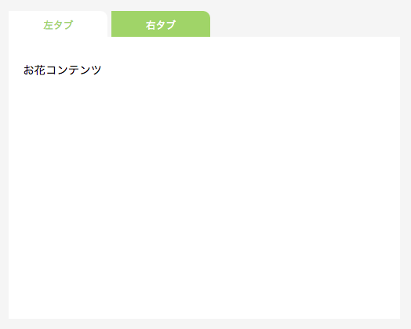

JavaScriptのライブラリであるjQueryを用いて以下のようなタブメニューを実装することを通じて、jQueryに関する基本的な知識を身に付けます。
jQueryはJavaScriptのライブラリです。JavaScriptの上で動くものであり、jQueryを導入したからといってJavaScriptが使えなくなるというわけではありません。
jQueryを導入することによって、今までのJavaScriptの書き方に加えて、とても便利なメソッドを有するjQueryオブジェクトを使うことができるようになります。
jQueryはJavaScriptで書かれています。通常、jQueryを使いたい場合は、head内でjQueryを記述するjsファイルを読み込む必要がありますが、RailsではデフォルトでjQueryが使えるようになっているため、特に何かする必要はありません。
前の章では、HTMLから特定の要素をDOMオブジェクトとして取得するためにquerySelectorメソッドを使いました。
jQueryの書き方を使えば、以下のようにセレクタを用いて簡潔にオブジェクトを取得することができます。
1 2 3 |
$(".hoge"); // クラスがhogeの要素
$("p"); // pタグの要素
$("#fuga .piyo"); //idがfugaの要素の中のクラスがpiyoの要素
|
このように、先頭に$（ドル）マークをつけ、括弧の中に取得したい要素のセレクタを記述することで、オブジェクトを取得することができます。
取得した要素は一つとは限りません。複数ある場合は、配列の形で取得することができます。querySelectorメソッドが最初に見つけた一つの要素を取得していたのと対照的ですね。
また、jQueryによって取得したオブジェクトは、jQueryオブジェクトと呼ばれます。
jQueryオブジェクトは、DOMオブジェクトとは完全に異なります。すなわち、DOMオブジェクトに定義されていたメソッドは使えません。例えば、addEventListenerメソッドによってイベントと関数を紐付けることはできません。
一方で、jQueryオブジェクトだからこそ使えるメソッドも沢山あります。そして、このメソッドが便利であるというのが、jQueryが広く使われる理由でもあります。
jQueryオブジェクトのメソッドとしてどのようなものがあるのでしょうか。
例えば、addEventListenerメソッドの代わりに、同じことのできるonメソッドがあります。
jQueryオブジェクトに対してイベントを紐付けたい時は、onメソッドを使います。以下の二つはどちらも「idがbuttonである要素がクリックされたらfunc関数を実行する」という全く同じ意味を表します。
1 2 3 |
document.querySelector("#button").addEventListener("click", func);
$("#button").on("click", func);
|
addEventListenerメソッド同様に、関数の定義を引数の所に書くこともできます。
1 2 3 4 5 6 7 |
document.querySelector("#button").addEventListener("click", function() {
// 処理
});
$("#button").on("click", function() {
// 処理
});
|
jQueryメソッドはとても豊富にあるので紹介しきれませんが、慣れるためにもう一つ、triggerメソッドを使ってみましょう。
jQueryオブジェクトに対してtriggerメソッドを使うと、triggerメソッドの引数のイベントを起こさせることができます。
例えば、コンソールで以下のコードを実行すると、画面上にある全てのチェックボックスをクリックすることができます。
1 |
$("input[type='checkbox']").trigger("click");
|
※タグ名等のセレクタに続いて[属性名='値']とすると、それに合致した要素を取得することができます。これはCSS等にも共通する使い方で、今回の場合は、typeがcheckboxのinput要素、すなわちチェックボックスを取得しています。
上述の通り、jQueryオブジェクトは、セレクタに合致する要素が複数ある場合、配列の形で全てを取得します。そしてjQueryオブジェクトのメソッドは、jQuery要素が複数ある場合、全ての要素に対して処理を実行します。
よって、上記のコードにより、画面上の全てのチェックボックスをクリックすることができるのです。
それでは、jQueryを用いてタブメニュー機能を実装しましょう。
前回のtest-jsアプリケーションに実装します。
タブメニューとして、以下の仕様を実装します。
・左右二つのタブを配置する
・タブがクリックされたら、そのタブの背景色が変わり、「選択されている」ことが分かるようにする
・タブの下には左右二つのコンテンツを置き、選択されている方に対応するコンテンツを表示し、そうでない方を隠す
・最初は、左のタブが選択されている状態とする
まずは、HTMLとCSSを作ってしまいましょう。
JavaScriptの学習が一番の目的であるため、それぞれ完成形を載せてしまいます。
まずはHTMLファイルを記述しましょう。
1 2 3 4 5 6 7 8 9 10 11 12 13 14 15 |
<div class="tab-menu">
<ul>
<li id="left" class="selected">左タブ</li>
<li id="right">右タブ</li>
</ul>
<div class="contents">
<div class="left">
<p>お花コンテンツ</p>
</div>
<div class="right">
<p>お魚コンテンツ</p>
</div>
</div>
</div>
|
最初は左のタブが選択されている状態にするため、左のタブのliタグに対してselectedクラスを適用しています。
タブであるliタグがクリックされたら、クリックされたliタグに対してselectedクラスを追加し、クリックされていない方のliタグのselectedクラスを削除するという仕様にします。
また、左のコンテンツ、右のコンテンツについては、最初からHTML上に表示させておきます。タブがクリックされるとともに、表示したくない方を画面上から消す（HTML上には残す）という仕様にします。
次に、CSSファイルを記述しましょう。コントローラー作成時に生成された、top.scssファイルを編集します。これはSCSSと呼ばれ、CSSの表現方法の一つです。
SCSSは、CSSに変換（コンパイルと呼びます）されてからブラウザに送られます。
SCSSでは、CSSの書き方に加えて、いくつかの便利な書き方をすることができます。ここでは、入れ子構造が表現できること、セレクタの条件の追加ができることを紹介します。実際に例を見てみましょう。
例えば、CSSでは、外側と内側の要素に対してそれぞれCSSを適用する時、以下のようにして書きます。
1 2 3 4 5 6 7 8 9 |
.outer {
width: 500px;
background-color: #ccc;
}
.outer .inner { /* .outerの中の.innerに適用される */
width: 200px;
background-color: #aaa;
}
|
SCSSでは、上記を以下のように書くことができます。
1 2 3 4 5 6 7 8 9 |
.outer {
width: 500px;
background-color: #ccc;
.inner { /* .outerの中に記述すると、.outerの中の.innerに対して適用される */
width: 200px;
background-color: #aaa;
}
}
|
このように、あるセレクタについての記述が書かれる中括弧の中に、別のセレクタについての記述を書くと、「外側のセレクタを満たす要素」の中にある「内側のセレクタの要素」に対してCSSを適用させることができます。
また、CSSでは、例えばマウスを乗せた時に別のCSSを適用させたい場合、以下のように書きます。
1 2 3 4 5 6 7 |
a {
color: #aaa;
}
a:hover { /* 「:hover」は要素にマウスを乗せた時に追加される擬似クラス */
color: #666;
}
|
SCSSでは、上記を以下のように書くことができます。
1 2 3 4 5 6 7 |
a {
color: #aaa;
&:hover { /* aタグで、かつ:hover擬似クラスがついているもの */
color: #666;
}
}
|
このように、あるセレクタについての記述が書かれる中括弧の中に、別のセレクタについての記述を&(アンパサンド)をつけて書くと、「外側のセレクタを満たす要素」かつ「内側のセレクタを満たす要素」に対してCSSを適用させることができます。
SCSSの便利な書き方によって、CSSをより簡潔に書くことが出来るようになります。積極的に使っていきましょう。
今回はSCSS記法を用いて記述してみます。
1 2 3 4 5 6 7 8 9 10 11 12 13 14 15 16 17 18 19 20 21 22 23 24 25 26 27 28 29 30 31 32 33 34 35 36 37 38 39 40 41 42 |
body{
background-color: #f5f5f5;
}
.tab-menu {
width: 500px;
margin-left: 60px;
ul { /* .tab-menuの中のulに対する記述 */
margin: 0;
padding: 0;
margin-top: 50px;
}
li { /* .tab-menuの中のli */
display: inline-block;
width: 120px;
height: 22px;
padding: 10px 10px 5px;
cursor: pointer;
background-color: #AECD6A;
border-top-right-radius: 10px;
font-size: 14px;
color: #fff;
text-align: center;
&.selected {/* .tab-menuの中のliの内、.selectedが与えられているものに対する記述 */
background-color: #fff;
color: #AECD6A;
}
}
}
.contents {
background-color: #fff;
height: 360px;
padding: 20px;
.right { /* .contentsの中の.rightに対する記述 */
display: none; /* 最初、右のコンテンツは非表示にする */
}
}
|
なお、上述のように、SCSSはCSSに変換されてからブラウザに読み込まれます。上の例は、以下のようなCSSに変換されます。
1 2 3 4 5 6 7 8 9 10 11 12 13 14 15 16 17 18 19 20 21 22 23 24 25 26 27 28 29 30 31 32 33 34 35 36 37 38 39 40 41 42 |
body {
background-color: #f5f5f5;
}
.tab-menu {
width: 500px;
margin-left: 60px;
}
.tab-menu ul {
margin: 0;
padding: 0;
margin-top: 50px;
}
.tab-menu li {
display: inline-block;
width: 120px;
height: 22px;
padding: 10px 10px 5px;
cursor: pointer;
background-color: #AECD6A;
border-top-right-radius: 10px;
font-size: 14px;
color: #fff;
text-align: center;
}
.tab-menu li.selected {
background-color: #fff;
color: #AECD6A;
}
.contents {
background-color: #fff;
height: 360px;
padding: 20px;
}
.contents .right {
display: none;
}
|
さて、上記のCSSの、タブメニューにおける重要な点は以下の2つです。
・selectedクラスが適用されているliタグの背景色を変え、選択されている状態を表すようにする
・contentsの中のrightクラスは非表示とする
一度トップページにアクセスし、表示を確認してみましょう。

勿論タブメニューとしては機能しませんが、初期表示は出来上がっていることがわかりますね。お好みでコンテンツの中身も埋めてみてください。
それではjQueryでタブメニュー機能を実装しましょう。
jQueryで実装したいのは以下の機能です。
メニューのタブであるliタグがクリックされたら
・そのメニューボタンにselectedクラスを追加、もう一方のliタグからはselectedクラスを削除
・そのメニューボタンのid（left、right）に対応するコンテンツを表示、もう一方のコンテンツを非表示
「メニューのタブがクリックされたら」は、以下のように、メニューのタブであるliタグをjQueryオブジェクトで取得し、onメソッドによりイベントリスナを追加することで実現できそうですね。
1 2 3 |
$("li").on("click", function() {
// 処理
});
|
クリックされたliタグに対してselectedクラスを追加するためには、まず「クリックされた」要素を取得しなくてはなりません。
今回は、liタグがクリックされたら、そのliタグに対しselectedクラスを追加します。
「クリックされたその要素」は、onメソッドの引数の関数内でthisという変数に入っています。
onメソッドの引数の関数内でthisという変数を使うと、そのイベントが発生した要素をDOMオブジェクトとして取得できます。
実際にタブメニューで「どちらがクリックされたか」を出力してみましょう。
DOMオブジェクトのidプロパティを出力させます。
1 2 3 4 5 |
window.addEventListener("load", function() {
$("li").on("click", function() {
console.log(this.id);
});
});
|
左タブをクリックすると「left」が、右タブをクリックすると「right」が出力されるようになりました。
これにより、クリックされた要素の取得が出来たこととなります。それでは実際に、クラスを操作しましょう。
jQueryオブジェクトは、addClassメソッド、removeClassメソッドを使うことで、クラスの追加・削除ができます。
以下のようにして、クラスの追加、削除が行えます。
1 2 |
(jQueryオブジェクト).addClass("クラス名");
(jQueryオブジェクト).removeClass("クラス名");
|
thisによりクリックされた要素をDOMオブジェクトとして取得することができましたが、addClass、removeClassはjQueryオブジェクトのメソッドです。以下のようにすることで、DOMオブジェクトをjQueryオブジェクトに変換することができます。
1 |
$(DOMオブジェクト)
|
thisをjQueryオブジェクトにするためには、以下のようにすれば良いですね。
1 |
$(this)
|
今回は、タブがクリックされたら
・selectedクラスがついているli要素のselectedクラスを削除し、
・クリックされた要素にselectedクラスを追加する
という仕様を実装しましょう。
1 2 3 4 5 6 |
window.addEventListener("load", function() {
$("li").on("click", function() {
$("li.selected").removeClass("selected");
$(this).addClass("selected");
});
});
|
実際にトップページにアクセスしてみましょう。コンテンツ部分はまだ変わりませんが、メニューボタンの背景色は確かに変わることが確認できます。
それでは次に、コンテンツ部分の表示の切り替えを実装しましょう。
コンテンツには、leftクラスを適用している要素と、rightクラスを適用している要素があります。
タブがクリックされたら、
①二つのコンテンツを非表示にする
②左のタブ、すなわちidがleftのliタグがクリックされた場合はleftクラスの要素を表示、右のタブ、すなわちidがrightのliタグがクリックされた場合はrightクラスの要素を表示
するようにすれば良いですね。
クリックされたliタグのidは、this.idによって取得できました。以下のようにすることで、それをクラス名とする要素を取得することができます。
1 |
$("." + this.id)
|
上記によって「idをクラス名とする要素」を取得できる理由について考えてみましょう。
jQueryオブジェクトは、セレクタを文字列として指定します。
そして、JavaScriptではRuby同様、+演算子により文字列の連結ができます。
よって、例えばクリックされた要素のidがrightなら、上記は以下を意味します。
1 |
$("." + "right") // すなわち $(".right")
|
確かに、rightクラスを指定することができていますね。
これで、クリックされたタブに対応するコンテンツを取得することができました。
表示・非表示については、jQueryオブジェクトのshowメソッド、hideメソッドを用います。
hideメソッドは、jQueryオブジェクトに対し、display: none;というCSSを適用させます。これにより、画面上に表示されなくなります。
反対に、showメソッドは、そのオブジェクトがブロック要素ならdisplay: block;、インライン要素ならdisplay: inline;といったように、そのオブジェクトに合った形で画面上に表示させるCSSを適用させます。
なお、このCSSは、通常のcssファイルの記述よりも優先されます。すなわち、cssファイルでdisplay: none;としているものについても、showメソッドによるdisplay: block;等が優先されるため、画面上に表示されることとなります。
それでは、実際にこれを用いて、タブのクリックされた方に対応するコンテンツを表示させるようにしてみましょう。
1 2 3 4 5 6 7 8 |
window.addEventListener("load", function() {
$("li").on("click", function() {
$("li.selected").removeClass("selected");
$(this).addClass("selected");
$('.contents div').hide(); // 二つの要素を非表示にする
$("." + this.id).show(); // クリックされたボタンに対応する要素を表示する
});
});
|
実際にトップページにアクセスし、挙動を確認しましょう。
以上で、タブメニューは完成です。
最後に少しコードの見直しをしましょう。liタグにはjQueryのonメソッドを使ってイベントリスナを追加しています。「ページの読み込みが終わったら」に関するイベントリスナも、jQueryで書くことで統一してみましょう。
windowはDOMオブジェクトです。DOMオブジェクトをjQueryオブジェクトに変換するには$(DOMオブジェクト)とすれば良いのでした。
1 2 3 4 5 6 7 8 |
$(window).on("load", function() {
$("li").on("click", function() {
$("li.selected").removeClass("selected");
$(this).addClass("selected");
$('.contents div').hide(); // 二つの要素を非表示にする
$("." + this.id).show(); // クリックされたボタンに対応する要素を表示する
});
});
|
基本的には、jQueryで代用できる処理はjQueryに統一してしまうのが良いでしょう。
jQueryオブジェクトには便利なメソッドがまだまだ沢山あります。
自分の実現したい機能もきっと、色々なメソッドを駆使することで実現できるはずです。
それらを扱う基本中の基本は、既に身に付いているでしょう。
実際に自分で欲しい機能を調べ、自分のアプリケーションに取り入れてみましょう。
お疲れ様でした！このカリキュラムの終わりに確認問題を解きましょう。
 大宅 誠人
大宅 誠人